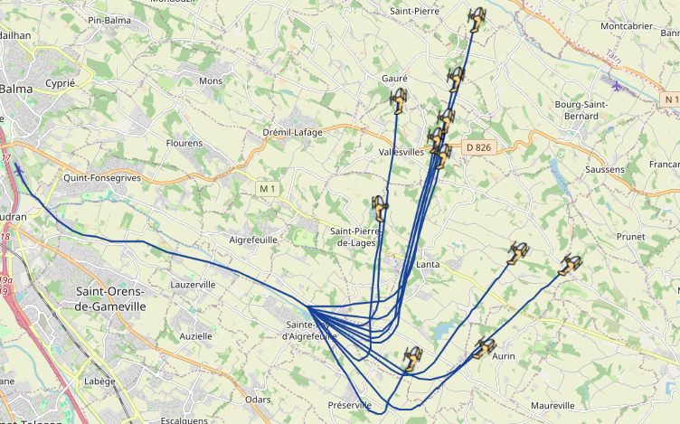

Un projet de recherche
Les technologies DApIA sont le résultat d'un projet de recherche du dispositif ANR ASTRID Maturation. Dans un contexte U-space et de lutte anti-drone, l'objectif est de produire des capacités de simulation et détection des attaques visant les données des protocoles de surveillance dans le trafic aérien à basse altitude.
Financé par :

Simulation des attaques
Grâce à un langage dédié, le composant DApIA altération permet de simuler des attaques afin d'entraîner ou de valider les modèles de détections. L'illustration montre une attaque de type ghost aircraft flooding simulée avec le composant d'altération.